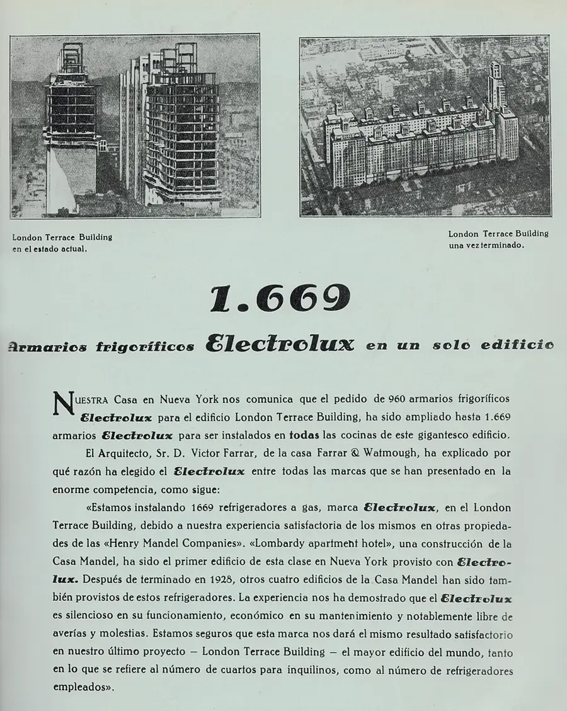

일렉트로룩스 Electrolux
일렉트로룩스(Electrolux)는 스웨덴 스톡홀름에 본사를 둔 다국적 가전제품 제조 기업이다. 주로 가정용 대형 가전과 청소기를 만들며, 판매 수량 기준 세계 2위 가전 제조사로 꼽힌다.
최종 업데이트

일렉트로룩스는 어떤 브랜드인가
일렉트로룩스는 1910년에 설립된 스웨덴의 다국적 가전제품 제조 기업이다. 제품은 자사 브랜드를 포함한 여러 브랜드명으로 판매되며, 가정용 소비자를 겨냥한 대형 가전과 청소기가 중심이다.
판매 수량 기준으로 Whirlpool에 이어 세계 2위 가전 제조사로 꾸준히 꼽힌다. 본사는 스톡홀름에 있고, 주 상장 시장은 스톡홀름 증권거래소이다.
1960년대에는 인수합병의 새로운 물결이 시작되었고, 사장을 거쳐 이사회 의장을 지낸 Hans Werthén이 분권화된 회사의 전략적 중심을 이끌며 빠른 성장에 기여했다. 비용 절감과 관리 중앙집중화 시도는 1960~70년대에도 있었으나, 전사적 구조조정은 1990년대 말에야 시작되었다.
일렉트로룩스는 어떻게 시작되고 성장했나
Elektromekaniska는 1910년 1월 19일 스톡홀름에서 엔지니어 Sven Carlstedt가 설립했으며, 그가 Eberhardt Seger와 함께 설계한 청소기용 범용 모터를 만드는 회사였다. 1912년 판매원 Axel Wenner-Gren을 만난 Carlstedt는 Lux와 협력하게 되었고, Lux는 필라델피아의 미국 Keller Manufacturing Company로부터 라이선스를 받아 청소기를 생산하며 Elektromekaniska의 모터를 장착했다.
Wenner-Gren은 1915년 Svenska Elektron을 세웠고, 1916년 이 회사가 Elektromekaniska의 지분 과반을 취득하면서 그가 경영을 맡았다. 1919년 8월 29일 사명이 Elektrolux로 바뀌었는데, 이는 기존 이름과 Lux를 합친 것이었다.
일렉트로룩스의 브랜드 아이덴티티는 무엇인가
청소기용 모터를 만드는 스웨덴의 작은 회사에서 출발해 가정용 대형 가전과 청소기를 함께 다루는 세계 2위 가전 제조사로 성장한 점이 특징이다.
일렉트로룩스의 대표 제품과 서비스는 무엇인가
주력 제품은 가정용 대형 가전과 청소기이다. 1923년 Arctic을 인수한 뒤 흡수식 냉장고를 제품군에 더했고, 세탁기는 1951년, 식기세척기는 1959년, 업소용 식품 서비스 장비는 1962년에 추가했다.
1960년부터 1969년까지는 ElektroHelios, 노르웨이의 Elektra, 덴마크의 Atlas, 핀란드의 Slev, Flymo 등을 인수했다. 북미에서는 Eureka 브랜드로 청소기를 2004년까지 판매했다.
1990년대에는 한동안 Husqvarna를 포함해 수많은 기업을 사들였다.
일렉트로룩스는 지금 어떤 상태인가
현재 판매 수량 기준 세계 2위 가전 제조사로 꼽히며 본사는 스톡홀름에 있다. 스톡홀름 증권거래소에 주 상장되어 있고, 1928년 상장했던 런던 증권거래소에서는 2010년에 상장이 폐지되었다.
2010년 기준 주식은 NASDAQ OMX Nordic Market과 장외에서 거래되며 OMX Nordic 40 구성 종목이다. 북미에서는 Aerus가 2000년 상표권을 그룹에 돌려주었고 2004년 Electrolux 이름 사용을 중단했다.
일렉트로룩스 로고는 어떻게 변해왔나
시기는 위키데이터 로고 기간 또는 위키미디어 커먼즈 파일 정보 기준입니다. 이미지를 누르면 원본 파일과 라이선스를 볼 수 있습니다.
사진으로 보는 일렉트로룩스의 역사

자주 묻는 질문
일렉트로룩스는 어느 나라 브랜드인가요?
일렉트로룩스는 스웨덴의 기술·전자 브랜드입니다.
일렉트로룩스는 언제 설립되었나요?
일렉트로룩스는 1910년 설립되었습니다.
일렉트로룩스의 브랜드 아이덴티티는 무엇인가요?
청소기용 모터를 만드는 스웨덴의 작은 회사에서 출발해 가정용 대형 가전과 청소기를 함께 다루는 세계 2위 가전 제조사로 성장한 점이 특징이다.
일렉트로룩스의 대표 제품은 무엇인가요?
주력 제품은 가정용 대형 가전과 청소기이다.
일렉트로룩스는 현재 어떤 상태인가요?
현재 판매 수량 기준 세계 2위 가전 제조사로 꼽히며 본사는 스톡홀름에 있다.
일렉트로룩스의 창업자는 누구인가요?
일렉트로룩스의 창업자는 악셀 벤네르그렌입니다(위키데이터 기준).
일렉트로룩스의 본사는 어디에 있나요?
일렉트로룩스의 본사는 스톡홀름에 있습니다(위키데이터 기준).
출처와 검증
일렉트로룩스 관련 참고: 공식 웹사이트 · 위키데이터 Q505922 · 한국어 위키백과 · 영어 위키백과. 브랜드명은 한글과 원어를 함께 표기하되 데이터에 없는 표기는 만들지 않습니다. 기원 국가·설립연도는 검수된 정의문에서 확인된 값을 우선하고, 없을 때만 공식 웹사이트 URL이 일치하는 위키데이터 개체의 값을 씁니다. 탄생일의 월·일은 위키데이터, 위키백과 정보상자, 본문 가운데 같은 연월로 확인되는 값만 싣고, 출처끼리 다르면 싣지 않습니다. 위키데이터 값은 2026-11-11 기준입니다.